地图的基本结构
所有地图都围绕同一个骨架设计,看懂它,任何新图都能快速上手:
爆点(Site)
安放炸弹(装包)的地方,用 A / B / C 命名。攻击方要把包安在这里,防守方要守住这里。
中路(Mid)
连接双方半场的咽喉要道。控制中路,就能同时威胁多个爆点,是最重要的地图控制区域。
连接(Connector)
爆点与中路之间的通道。谁掌握了连接,谁就能快速转点、包夹。
通道(Entry)
进攻方进入爆点的必经之路,通常狭窄且有掩护。突破通道是进攻方最难的一步。
地图图例
下图是每张地图的官方俯视图(取自 Riot 官方游戏数据),A/B/C 爆点与中路标签按官方点位标注在图上。图例:
隐世修所 Haven
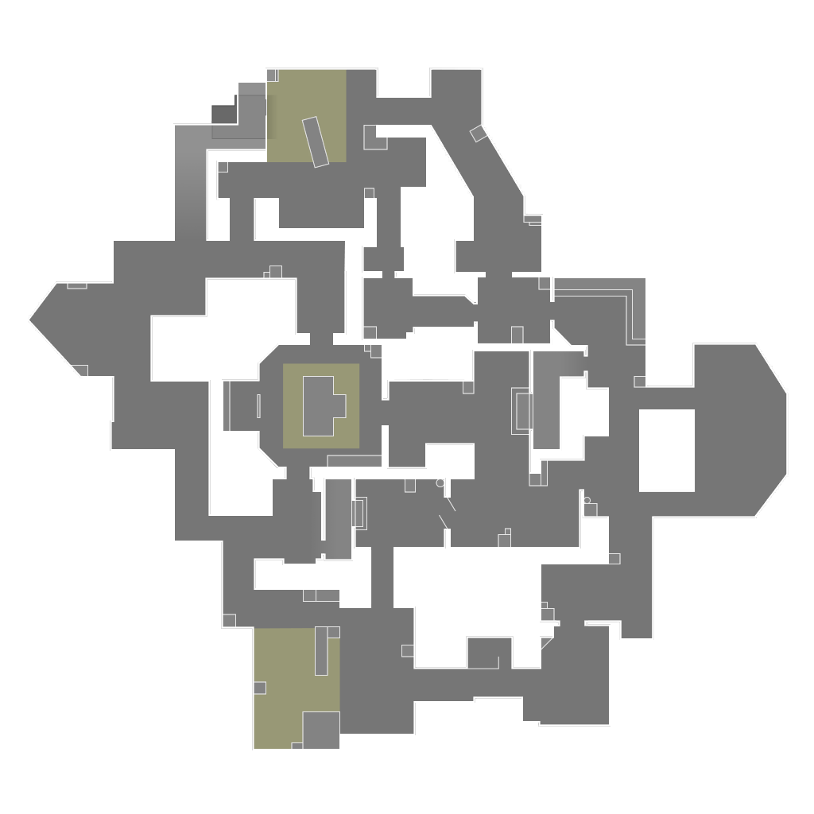
结构特点全游戏唯一的三点图:三个爆点 + 一条长中路 + 两条连接。进攻路线选择最多,防守压力最大。
关键点位中路(全图枢纽)、A 长廊、C 车库、B 塔楼。
进攻要点先控中路,控制后可以随时威胁三个点;三点图防守分散,进攻方信息优势明显。
防守要点每个点不能放太多人,保持信息流动;听到中路脚步要判断是转点还是假攻。
新手提示别守点深处发呆——优先守住连接和通道,把"敌人从哪来"报给队友。
双塔迷城 Bind
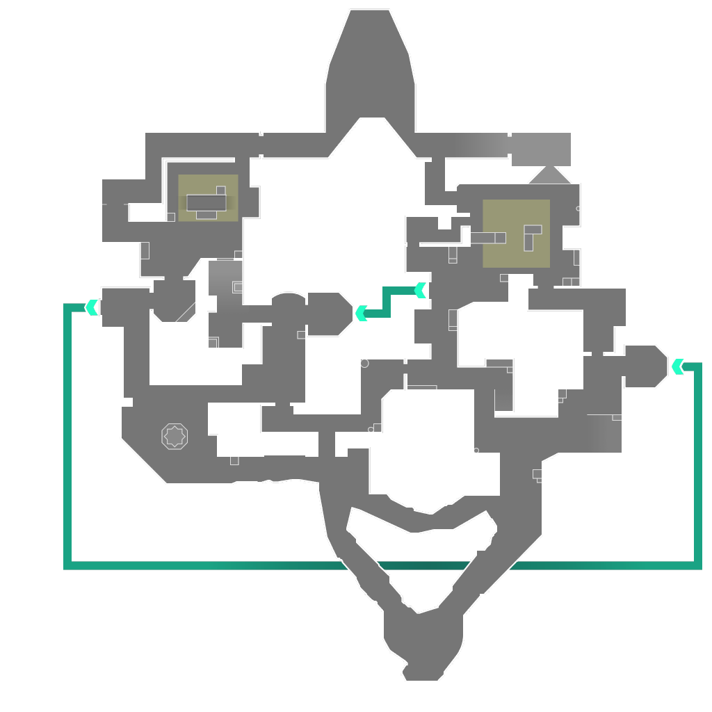
结构特点双点图但没有中路——地图分成左右两翼,靠两扇单向传送门连接。节奏快,转点快。
关键点位A 传送门、B 传送门、后花园、A 长屋、B 短屋。
进攻要点传送门转点极快:打 A 两秒传 B 再打一波,防守方反应不过来。
防守要点传送门附近是兵家必争之地,用技能提前看住;两翼各守各的,别轻易串门。
新手提示新手最常迷路的图!先在自定义里把两个传送门位置记住——"从哪进、传到哪、出门看哪"。
森寒冬港 Split
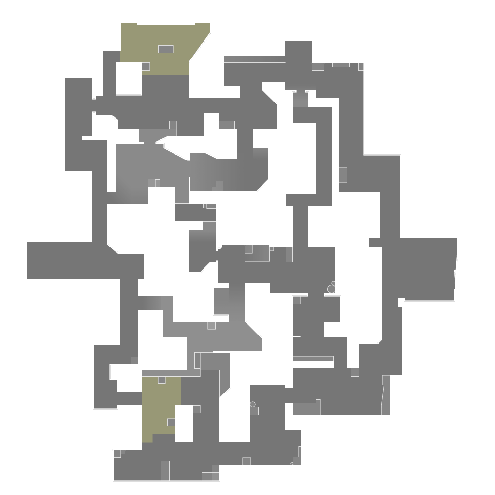
结构特点双点图 + 上下层立体结构:中路绳索连接 A 天窗(高层)与 B 天台,高低差是这张图的灵魂。
关键点位中路绳索、A 天窗(Heaven)、B 天台、电梯井、A 巷。
进攻要点抢下中路就控制了全局:从高处架枪视野压制,队友从低层包夹。
防守要点天窗/天台高点必须有人看守,中路渗透是最常见的突破口。
新手提示先学"电梯"路线(中路垂直通道),别在绳索上被高点钓鱼——架枪记得抬头。
义境空岛 Ascent
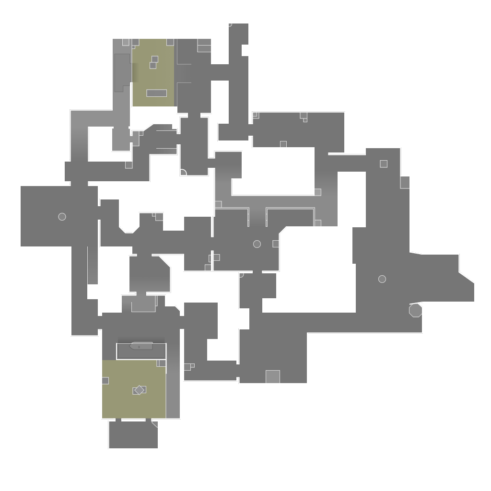
结构特点双点图 + 开阔中路:中路两端各有一扇旋转门(可关闭),中路中央是塔楼制高点。
关键点位中路塔楼、A 旋转门、B 旋转门、A 巷、B 主道。
进攻要点塔楼是全图最重要的制高点——拿下中路+塔楼,进点就赢了一半。
防守要点旋转门会被关门,别贴脸站位;塔楼下方和连接口都要有视野。
新手提示这是一张非常"经典"的对枪图,练急停、练爆头线,这张图是最好的考场。
极地寒港 Icebox
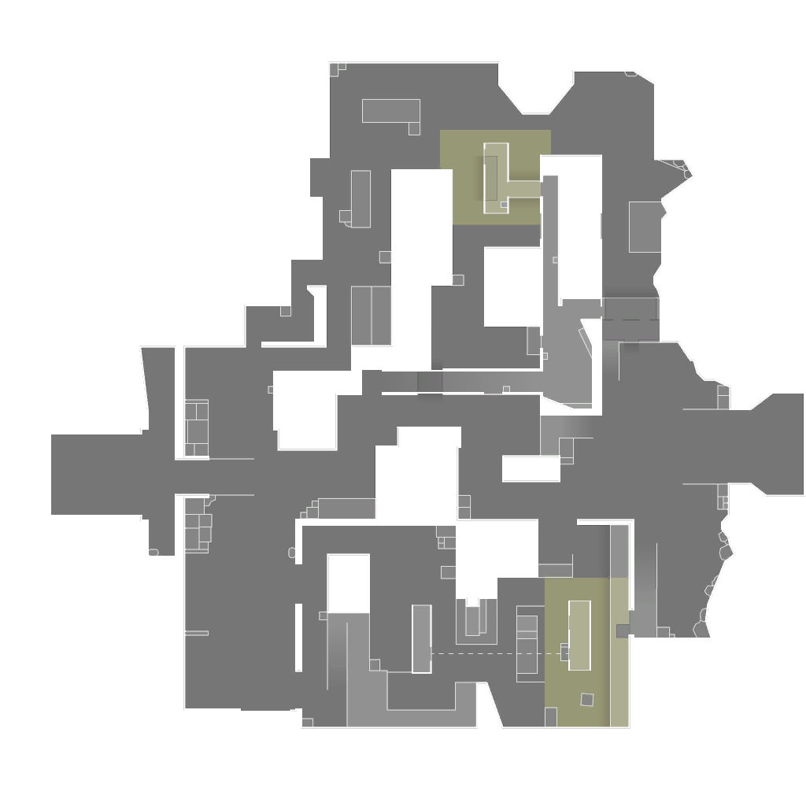
结构特点双点图 + 极端垂直结构:雪地工业区,高低差大、滑索多,几乎每个点都有高层位。
关键点位A 雪道、B 内部、中路滑索、厨房、A 高层。
进攻要点利用滑索快速上高台,高打低的视野优势巨大;烟幕配合滑索进场是常见套路。
防守要点每个爆点都要有高点看守,纯地面站位会被上方的枪线打穿。
新手提示这张图新手最容易"被高打低打到怀疑人生"——先练走位路线,架枪时记得看高处。
微风岛屿 Breeze
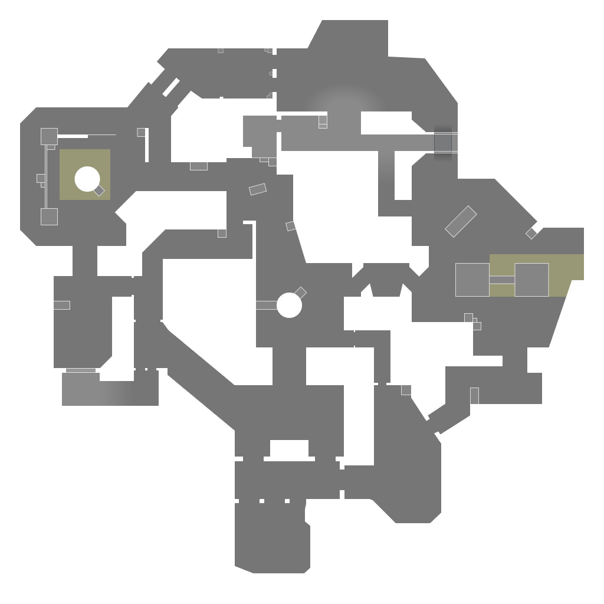
结构特点全游戏最大的地图之一:双点 + 超长中路,视野开阔、对枪距离远,是一张长枪图。
关键点位A 洞、B 长廊、中路海滩、A 主道、B 烟囱。
进攻要点狙击手在这张图有舞台;进点前多用烟幕遮住长线,别在空地上大摇大摆。
防守要点站位要深、要借助掩体——开阔地形露头就会被远距离枪线点名。
新手提示新手期在这张图别拿霰弹枪和短枪:距离会教做人,老老实实拿步枪或大狙。
裂变通道 Fracture
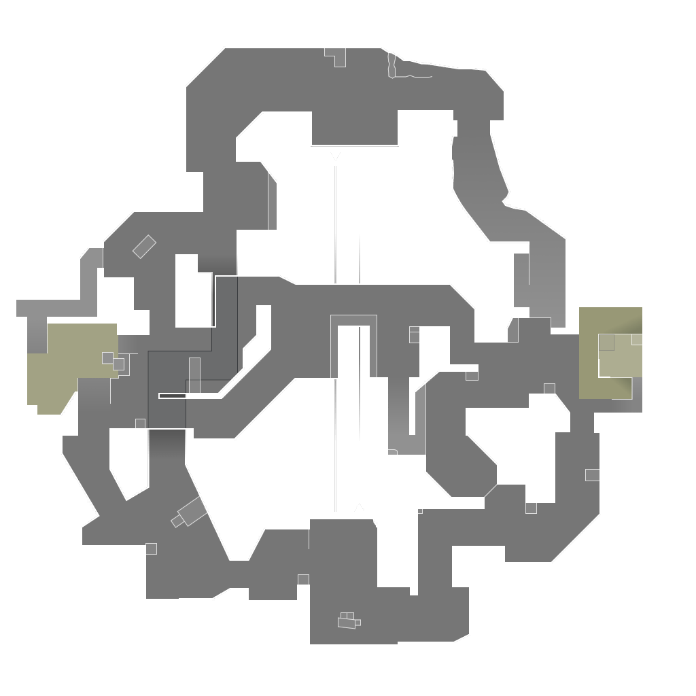
结构特点罕见的 H 形地图:进攻方出生在正中央,可以从两侧同时进攻,防守方天然处于被包夹的位置。
关键点位两侧绳索、A 上道、B 下道、中央大道、双翼连接。
进攻要点双线进攻是这张图的灵魂:两边同步施压,防守方顾此失彼,哪边漏了打哪边。
防守要点千万别孤身守点!这图单防=被包夹,多打交叉枪线、及时叫回防。
新手提示跟着队友走同一边,别一个人绕远路——这图"落单即死亡"。
珍珠港 Pearl
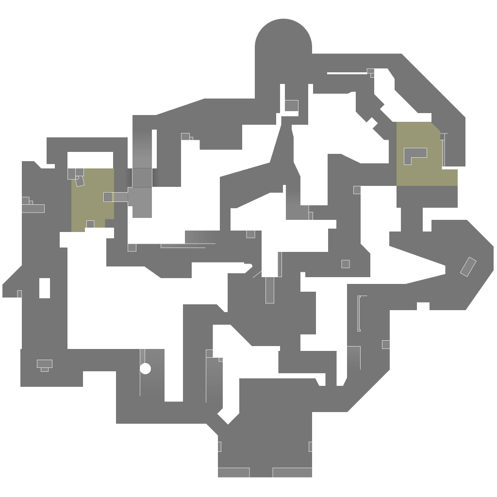
结构特点双点图 + 复杂的中路大厅网络:中路入口多、掩体交错,是全场最难拿信息的地方。
关键点位中路大厅、A 中心、B 长廊、后道、双翼连接。
进攻要点道具先行:每个转角都有可能有敌人,用技能清完死角再进点。
防守要点中路最容易渗透,哨卫优先用陷阱封中路;听到大厅有动静立刻报点。
新手提示这张图"转角杀"频发——进点前养成"先问道具,再露身位"的习惯。
莲华古城 Lotus
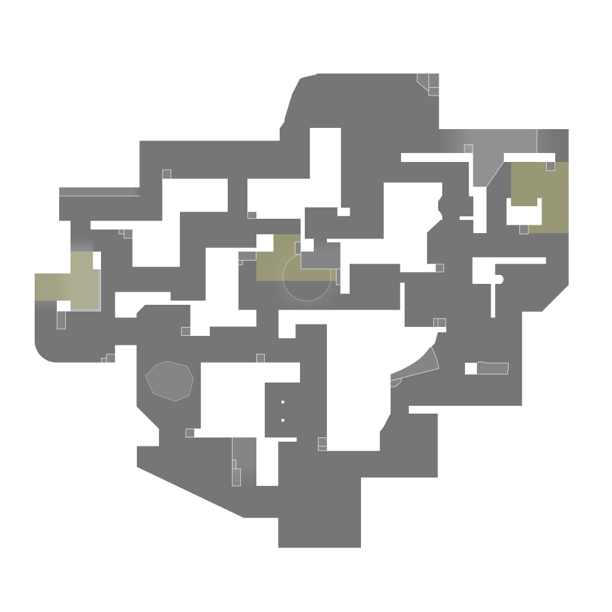
结构特点三点图 + 多扇可旋转门:旋转门转动会改变通路,进攻路线非常灵活多变。
关键点位A 旋转门、B 旋转门、C 点、中央连接、A 顶。
进攻要点旋转门能瞬间切换进攻方向——A 打到一半转 B,节奏变化就是这张图的武器。
防守要点三点图防守分散,要依靠信息判断进攻重心,及时换防;旋转门声音就是情报。
新手提示开局多听旋转门的声音——听到转动就能猜到敌人要打哪边,这是免费的侦察。
日落之城 Sunset
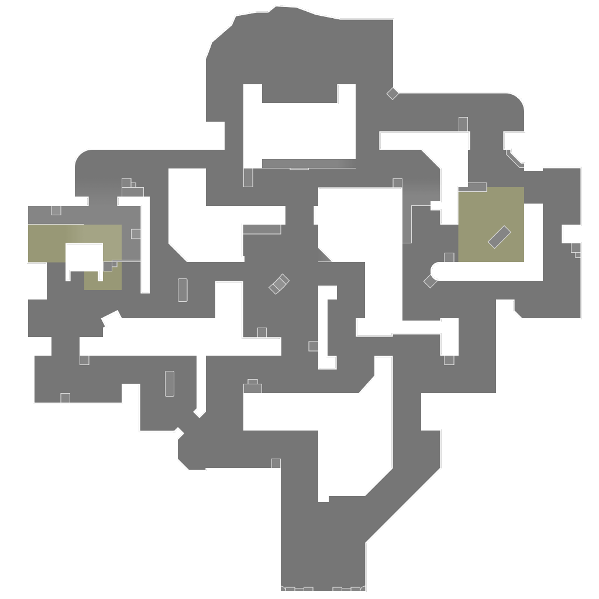
结构特点紧凑型双点图:地图尺寸小、中路短、连接近,节奏快,几乎每回合都有交火。
关键点位中路小巷、A 外场、B 内部、A 楼梯、B 后道。
进攻要点快节奏图适合速攻流:道具一波爆点,打防守方反应时间差。
防守要点点小人多,别站重叠位(会被一穿二);中路要派专人看守。
新手提示这张图练"快打快撤":打完第一波立刻换位,别在一个角落蹲到天荒地老。
深渊之域 Abyss
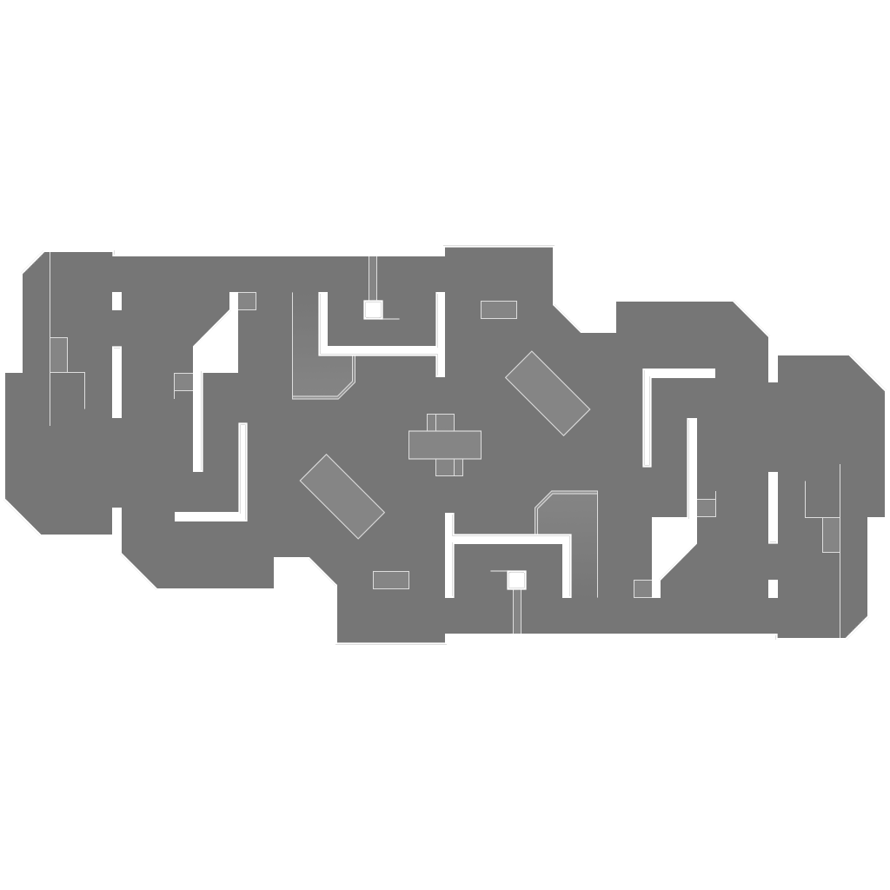
结构特点双点图 + 全游戏唯一的开放深渊:地图边缘没有围栏,走位失误会直接坠落死亡。
关键点位中路桥、A 边、B 边、A 内部、B 塔。
进攻要点把敌人逼向边缘也是击杀方式;桥上是高频交火区,先手架枪优势大。
防守要点利用边缘落差打"悬崖战术",但自己千万别站在边缘——一发枪械冲击就能送你下去。
新手提示这张图第一杀手是"自己掉下去"。走路、拉枪、被击退时都要远离边缘!
锈蚀之城 Corrode
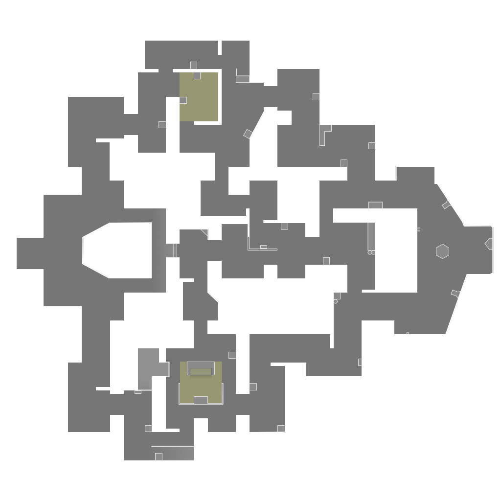
结构特点2025 年加入的标准双点图:工业废城风格,点位紧凑、转角多、掩体密集。
关键点位A 点、B 点、中路连接、两侧通道。
进攻要点转角多 = 预瞄重要:贴着墙静步推进,准星始终放在下一个转角。
防守要点转角位是霰弹枪和短枪的天堂,注意排查近点,别给敌人"转角杀"的机会。
新手提示这张图较新、参考资料有限——先在自定义里完整逛一圈,再进排位,以游戏内为准。
绝峰 Summit
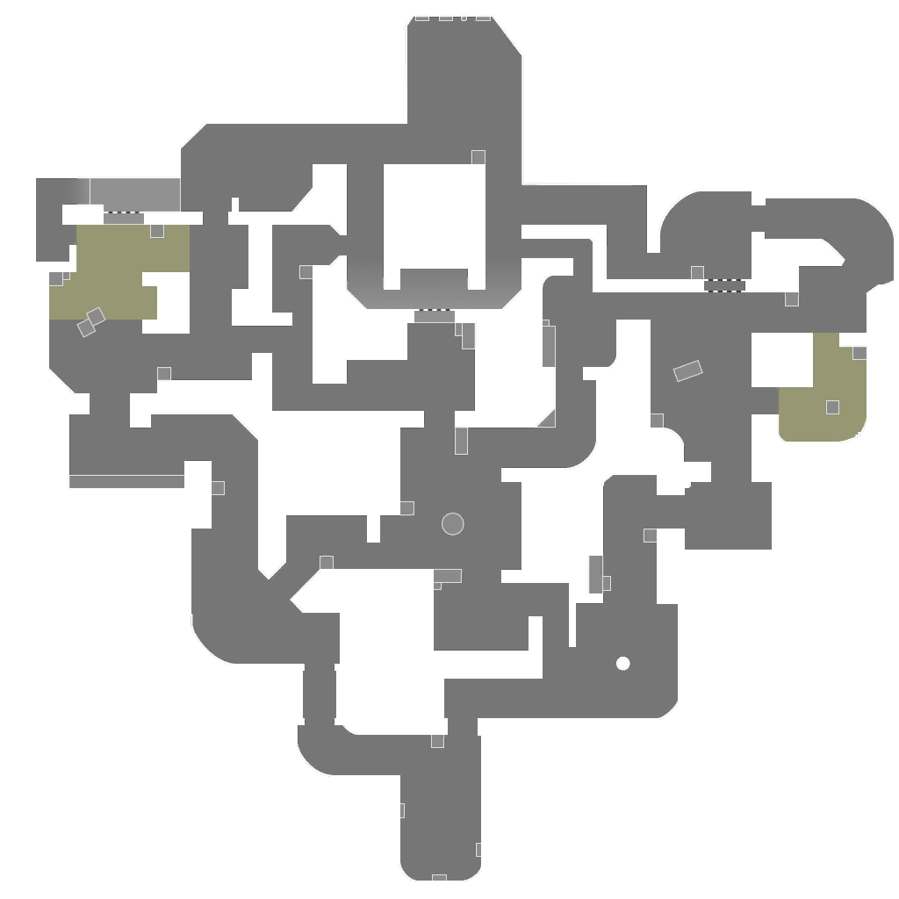
结构特点2026 年 6 月加入竞技池的最新地图:双点结构 + 独特的可掉落墙体机制——墙体掉落后会永久封住某条路线,地图随对局演变。
关键点位A 点、B 点、中路、各可掉落墙体位置。
进攻要点墙体变化会改变通路——利用对手"惯性记忆"打时间差,趁对方还没适应新路线时强攻。
防守要点时刻留意墙体掉落后的新通路,及时调整站位;被永久封死的方向就不用再派人看了。
新手提示全新机制还在被职业选手开发中——新图阶段人人都是新手,大胆尝试、多看比赛学打法,以游戏内为准。
当前竞技地图池
排位(Premier)、竞技模式和死斗只会匹配以下 7 张图(每两三个月轮换一次):
其他地图(如 裂变通道 Fracture、珍珠港 Pearl、双塔迷城 Bind、深渊之域 Abyss 等)仍可在普通模式、极速模式与自定义游戏中游玩。
新手上图提示
背两个关键点:每张图先记住"防守方常站的位置"和"进攻方进场的第一枪线",之后慢慢积累。
跟着队友走:不熟地图就跟着有经验的队友补位,一边打一边记点位,比死记硬背快。
下一步:认识武器 →